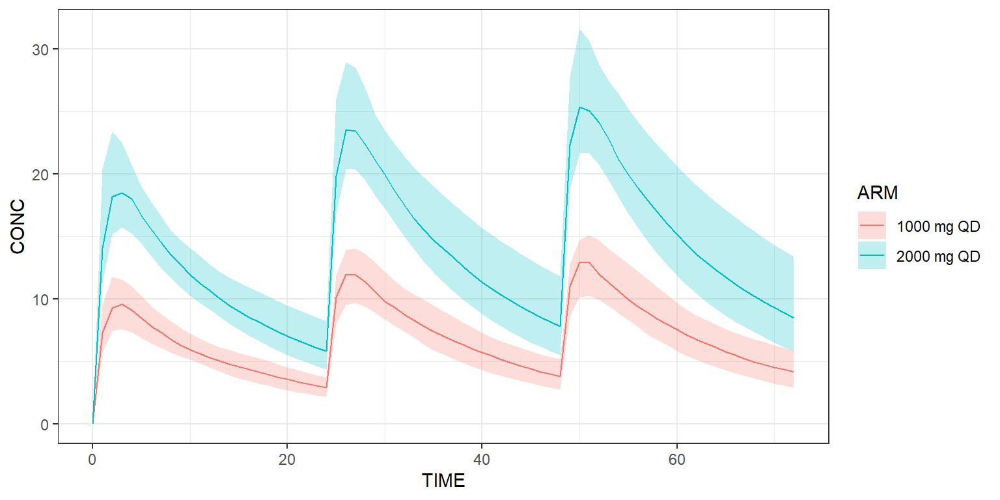

Get started
library(campsis)Load model
Load a PK model from the built-in model library or load your own one.
model <- model_library$advan4_trans4 # 2-compartment PK model with absorption compartmentCreate dataset
Create a dataset of 10 individuals in CAMPSIS. For instance, let’s give 1000 mg QD for 3 days and observe every hour.
dataset <- Dataset(10) %>%
add(Bolus(time=0, amount=1000, ii=24, addl=2)) %>%
add(Observations(times=0:72))Simulate
Simulate this very simple protocol:
results <- model %>% simulate(dataset, seed=1)
head(results)Plot results
Plot all simulated profiles using a spaghetti plot:
spaghettiPlot(results, "CP")
Or use a shaded plot to see the simulated 90% prediction interval:
shadedPlot(results, "CP")
Simulate arms
The dataset can contain more than one treatment arm. In the example below, we explicitly create 2 arms. The first arm receives a dose of 1000 mg QD, while the second arm receives twice this dose.
arm1 <- Arm(subjects=50, label="1000 mg QD") %>%
add(Bolus(time=0, amount=1000, ii=24, addl=2)) %>%
add(Observations(times=0:72))
arm2 <- Arm(subjects=50, label="2000 mg QD") %>%
add(Bolus(time=0, amount=2000, ii=24, addl=2)) %>%
add(Observations(times=0:72))
dataset <- Dataset() %>%
add(c(arm1, arm2))
results <- model %>% simulate(dataset, seed=1)
shadedPlot(results, "CP", scenarios="ARM")
Derive from base model
Scenarios derived from the based model or/and dataset can be easily implemented. Below, we’d like to see what happens if the clearance of this model is multiplied by two.
scenarios <- Scenarios() %>%
add(Scenario("Base model")) %>% # Original CL is 5
add(Scenario("Increased clearance", model=~.x %>% replace(Theta(name="CL", value=10))))
results <- model %>% simulate(dataset, scenarios=scenarios, seed=1)
shadedPlot(results, "CP", scenarios=c("ARM", "SCENARIO")) + ggplot2::facet_wrap(~SCENARIO)